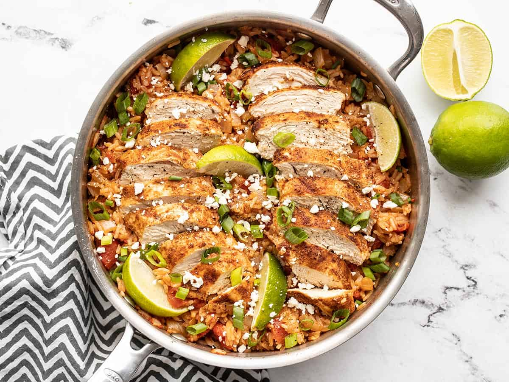

Chipotle Chicken & Rice

Description:
Chipotle Lime Chicken and Rice is FLA-VOR-FUL! You’ve got a hefty dose of spices, tangy lime juice, and a bunch of flavor from the chicken that cooks right in the same pot. It turns out smoky, spicy, tangy, and oh so delicious!
Ingredients:
- chicken
- onion
- seasonings: chipotle, cumin, garlic, onion, salt
- lime juice
- long-grain white rice
- oven-roasted diced tomatoes
- chicken broth
Steps:
- season chicken
- brown chicken in pan
- chop onion
- saute onion
- add tomatoes, broth, rice, and chicken
- simmer 15 minutes